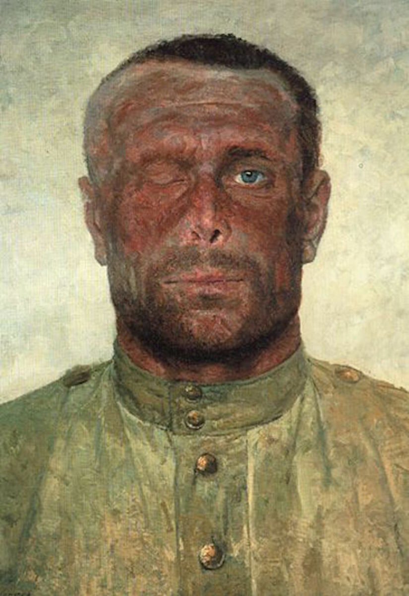
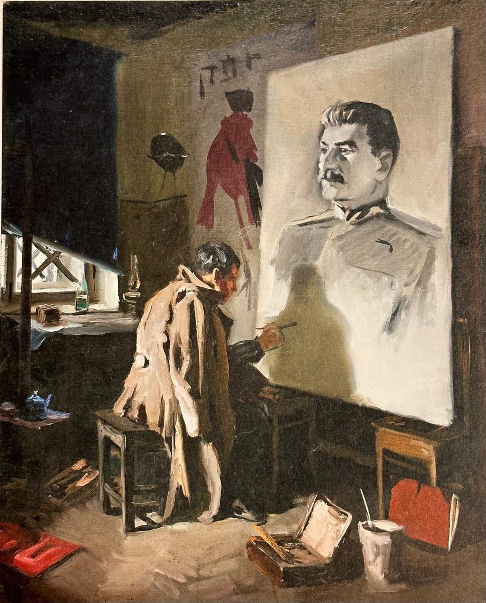
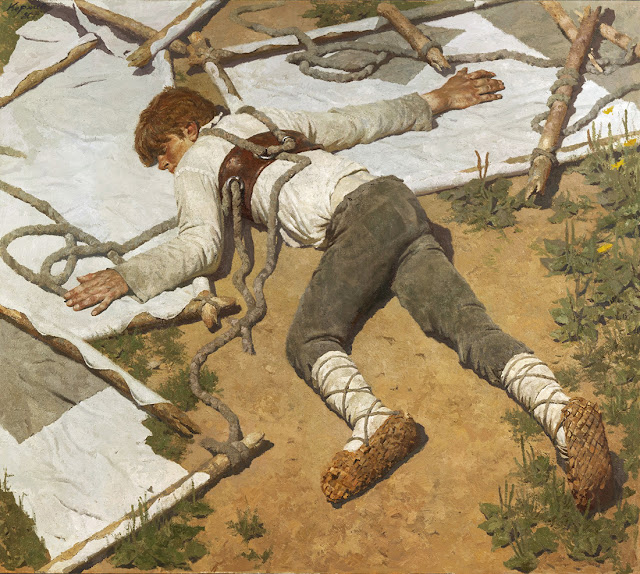
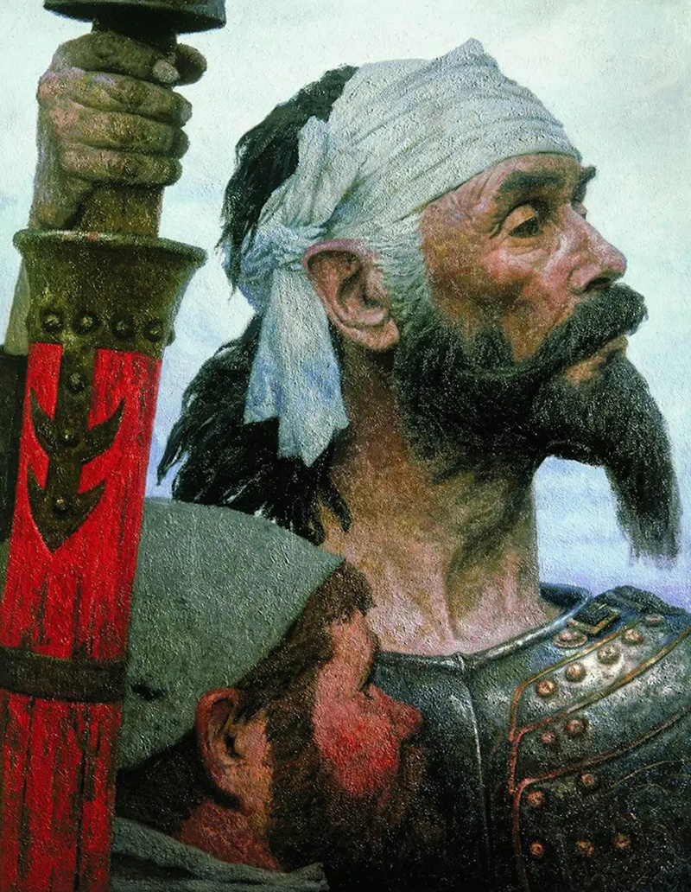
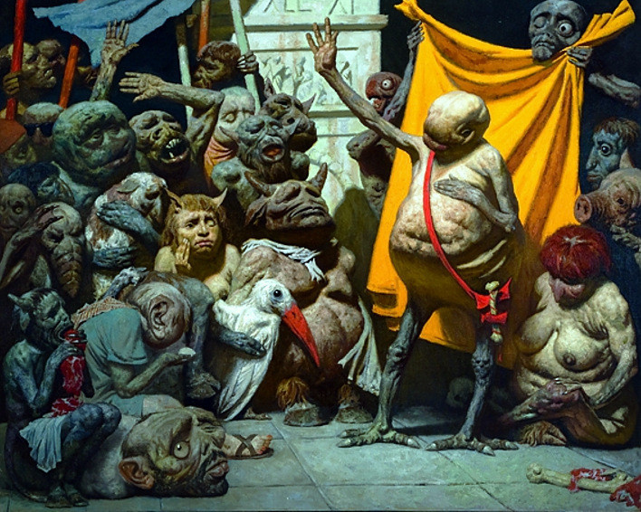

In Western retellings of Russian art and culture, the socialist realists get short shrift. The phenomenon
itself often makes an appearance (especially since Katerina Clark and Evgeny Dobrenko opened up the field)
and sometimes it’s even attached to specific names. But those names and the writers/artists/playwrights
behind them are often treated as epiphenomena, as functions of a government program or symptoms of a system.
They rarely enjoy the cult of authorship, the Romantic image of “author-creator,” that attaches itself to
writers and artists from Pushkin to Larionov to Prigov.

Gelii Korzhev, Traces of War (Sledy voiny, 1965)
Even if most Slavists have heard of Cement or How
the Steel Was Tempered, neither Gladkov or Ostrovky is likely to find himself the subject of a conference
panel, a single-author dissertation, or even a dedicated article. And that’s a shame, if for no other reason
than it deprives us of a view from within. What did the Soviet Union look like to an artist devoted to the
cause? How did it morph and transmogrify over time? And how does a single creative subject confront and process
its various phases?
A recent exhibition at the New Tretyakov Gallery in Moscow provides some clues. Entirely devoted to one
Gelii Korzhev, a master of socialist realism, the exhibition traces the artist’s creative development throughout
his long life (1925–2012), treating him not like a function, but like a subject. It leads to some weird and
grotesque discoveries that made me think about socialist realism and the entire Soviet project in a whole new way.
Though I hadn’t heard of Korzhev before, I had seen his work—primarily a piece called “Traces of War” (Sledy voyny 1967),
with which the exhibition begins. From a canvas more that six feet tall, Korzhev’s most famous subject stares out at
the viewer with a penetrating one-eyed glare. The war veteran, tightly framed in this huge portrait, is missing his
right eye, and with his left he looks directly at the viewer, reminding us of his sacrifice and, by implication, of
the wholeness of our own vision. In the subject’s expression, Korzhev manages a delicate balance between suffering
and pride. It’s easy to see why this portrait became such a textbook (“khrestomatiinyi,” as the catalogue emphasizes)
specimen of socialist realism and how it helped build the cult of WWII in the late Soviet Union.

Gelii Korzhev, A Study (Eskiz, 1953)
Indeed, Korzhev came to prominence precisely in the late-Stalin years, as the war crystallized into a shared sacrifice,
a national trauma, and a moral raison d’état. His early works show a people still suffering but regathering its
strength in classic socialist realist fashion. Even here, his canvases are distinguished by a particular eye for
composition, and his palette and his extraordinary ability to render emotionally charged ambiguity—both suffering
and hope—align him with the Dutch masters as much as with the domestic traditions he explicitly drew on (primarily
the 19th-century peredvizhniki). It’s easy to see why he was invited to portrait Stalin himself in the dictator’s
final years.
Throughout his life, Korzhev remained a devout communist and even an unrepentant (if tacit) Stalinist, but during
the Brezhnev years something crept into his work that would be hard to mistake for anything but doubt. Presented
in the Tretyakov directly after his portraits of Stalin, but actually coming only later, in the 1970s, Korzhev
embarked on series of studies of the Russian Icarus, “Egorka-letun.” Depicted after his fall, Egorka’s body is
lifeless, splayed over the ruins of his homemade wings.

Gelii Korzhev, Egorka the Flyer (Egorka-letun, 1968)
Korzhev later refashioned the painting to depict a westerner (or westernizer?) in blue jeans ruined against the
remains of his protest signage. The necessity of this retrofitting (not included in the Tretyakov show) only makes
the implications of the original clearer. The image conveys not only dashed dreams, but the impossibility, the
inherent foolishness of grand world-changing ambitions.

Gelii Korzhev, Don Quixote (Don Kikhot, 1988)
After the fall of the Soviet Union, even Egorka’s failed flight seemed too optimistic, and Korzhev turned to an
even more melancholic character. In a series of intimate portraits, Korzhev depicted a gaunt and hopeless Don
Quixote, almost always carrying a bright-red lance with sickle-shaped metalwork. If Egorka at least flew before
he fell, Don Quixote was never living anything but a delusion. Never a knight, errant or otherwise, he created a
world that had nothing to do with reality and imposed it on others. While Cervantes gets at least as much comedy
as tragedy out of Quixote’s misapprehensions of the world, Korzhev in the 1990s found only the heartbreak.
Strangest of all in Korzhev’s dark and melancholy collection of characters is his series, in the 1980s and 1990s,
of what he called “Tiurliki” or “Mutanty.” The series of grotesque hybrid bodies, of pale gnomic humanoids with
features of beasts and birds, represents to say the least a strange and dark turn for a consecrated socialist
realist. In a style the artist called “mystical realism” (misticheskii realizm), Korzhev glares humorlessly at
into an alternative reality where deformations of human character become surface phenomena. Though few of the
paintings have direct political references, the Soviet painter’s jarring departure from reality into a realm
reminiscent of Freud and Max Ernst is itself a political act.

Gelii Korzhev, Mutants (Tiurliki) (Mutanty (Tiurliki), 1993)
It is also intensely personal. And it is this attention to Korzhev as an artist, as an individual creative psyche that makes the New Tretyakov’s show so fascinating. It presents the peregrinations of an intimate and passionate interaction with socialist realism, with Marxist ideals, and with the Soviet project. What emerges is a portrait from within the psychology of a devout admirer. Seen from the inside, Soviet history starts to look like a torrid love story, an intense affair of deep connection that devolved into hard suffering, abuse, and eventually disillusionment.
The exhibition ends where it began, confronting the viewer with “The Traces of War,” only now, on second viewing, it is not the subject’s intense gaze of pride and sacrifice that seems most salient. Somehow, the focus has shifted to his partial blindness. Korzhev, perhaps, was always more interested in how the sacrifice of the war distorted vision, rendered depth invisible, and repressed the darker parts of the world.